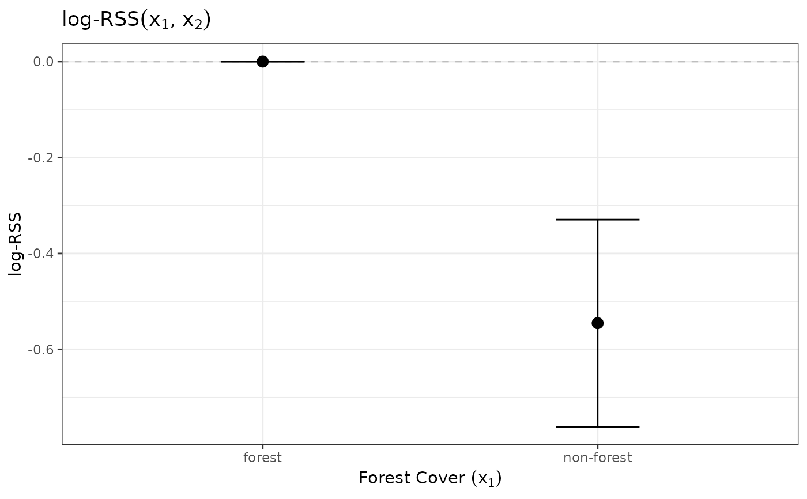

Calculate log-RSS(x1, x2) for a fitted RSF or (i)SSF
log_rss(object, ...)
# S3 method for glm
log_rss(object, x1, x2, ci = NA, ci_level = 0.95, n_boot = 1000, ...)
# S3 method for fit_clogit
log_rss(object, x1, x2, ci = NA, ci_level = 0.95, n_boot = 1000, ...)[fit_logit, fit_clogit]
A fitted RSF or (i)SSF model.
Further arguments, none implemented.
[data.frame]
A data.frame representing the habitat values
at location x_1. Must contain all fitted covariates as expected by
predict().
[data.frame]
A 1-row data.frame representing the single
hypothetical location of x_2. Must contain all fitted covariates as expected
by predict().
[character]
Method for estimating confidence intervals around
log-RSS. NA skips calculating CIs. Character string "se" uses standard error
method and "boot" uses empirical bootstrap method.
[numeric]
Level for confidence interval. Defaults to 0.95
for a 95% confidence interval.
[integer]
Number of bootstrap samples to estimate confidence
intervals. Ignored if ci != "boot".
Returns a list of class log_rss with four entries:
df: A data.frame with the covariates and the log_rss
x1: A data.frame with covariate values for x1.
x2: A data.frame with covariate values for x2.
formula: The formula used to fit the model.
This function assumes that the user would like to compare relative
selection strengths from at least one proposed location (x1) to exactly
one reference location (x2).
The objects object$model, x1, and x2 will be passed to
predict(). Therefore, the columns of x1 and x2 must match
the terms in the model formula exactly.
Avgar, T., Lele, S.R., Keim, J.L., and Boyce, M.S.. (2017). Relative Selection Strength: Quantifying effect size in habitat- and step-selection inference. Ecology and Evolution, 7, 5322–5330.
Fieberg, J., Signer, J., Smith, B., & Avgar, T. (2021). A "How to" guide for interpreting parameters in habitat-selection analyses. Journal of Animal Ecology, 90(5), 1027-1043.
See Avgar et al. 2017 for details about relative selection strength.
Default plotting method available: plot.log_rss()
# \donttest{
# RSF -------------------------------------------------------
# Fit an RSF, then calculate log-RSS to visualize results.
# Load packages
library(ggplot2)
# Load data
data("amt_fisher")
amt_fisher_covar <- get_amt_fisher_covars()
# Prepare data for RSF
rsf_data <- amt_fisher |>
filter(name == "Lupe") |>
make_track(x_, y_, t_) |>
random_points() |>
extract_covariates(amt_fisher_covar$elevation) |>
extract_covariates(amt_fisher_covar$popden) |>
extract_covariates(amt_fisher_covar$landuse) |>
mutate(lu = factor(landuse))
# Fit RSF
m1 <- rsf_data |>
fit_rsf(case_ ~ lu + elevation + popden)
# Calculate log-RSS
# data.frame of x1s
x1 <- data.frame(lu = factor(50, levels = levels(rsf_data$lu)),
elevation = seq(90, 120, length.out = 100),
popden = mean(rsf_data$popden))
# data.frame of x2 (note factor levels should be same as model data)
x2 <- data.frame(lu = factor(50, levels = levels(rsf_data$lu)),
elevation = mean(rsf_data$elevation),
popden = mean(rsf_data$popden))
# Calculate (use se method for confidence interval)
logRSS <- log_rss(object = m1, x1 = x1, x2 = x2, ci = "se")
# Plot
ggplot(logRSS$df, aes(x = elevation_x1, y = log_rss)) +
geom_hline(yintercept = 0, linetype = "dashed", color = "gray") +
geom_ribbon(aes(ymin = lwr, ymax = upr), fill = "gray80") +
geom_line() +
xlab(expression("Elevation " * (x[1]))) +
ylab("log-RSS") +
ggtitle(expression("log-RSS" * (x[1] * ", " * x[2]))) +
theme_bw()
# SSF -------------------------------------------------------
# Fit an SSF, then calculate log-RSS to visualize results.
# Load data
data(deer)
sh_forest <- get_sh_forest()
# Prepare data for SSF
ssf_data <- deer |>
steps_by_burst() |>
random_steps(n = 15) |>
extract_covariates(sh_forest) |>
mutate(forest = factor(forest, levels = 1:0,
labels = c("forest", "non-forest")),
cos_ta = cos(ta_),
log_sl = log(sl_))
#> Warning: Some bursts contain < 3 steps and will be removed
# Fit an SSF (note model = TRUE necessary for predict() to work)
m2 <- ssf_data |>
fit_clogit(case_ ~ forest + strata(step_id_), model = TRUE)
# Calculate log-RSS
# data.frame of x1s
x1 <- data.frame(forest = factor(c("forest", "non-forest")))
# data.frame of x2
x2 <- data.frame(forest = factor("forest", levels = levels(ssf_data$forest)))
# Calculate
logRSS <- log_rss(object = m2, x1 = x1, x2 = x2, ci = "se")
# Plot
ggplot(logRSS$df, aes(x = forest_x1, y = log_rss)) +
geom_hline(yintercept = 0, linetype = "dashed", color = "gray") +
geom_errorbar(aes(ymin = lwr, ymax = upr), width = 0.25) +
geom_point(size = 3) +
xlab(expression("Forest Cover " * (x[1]))) +
ylab("log-RSS") +
ggtitle(expression("log-RSS" * (x[1] * ", " * x[2]))) +
theme_bw()

# }